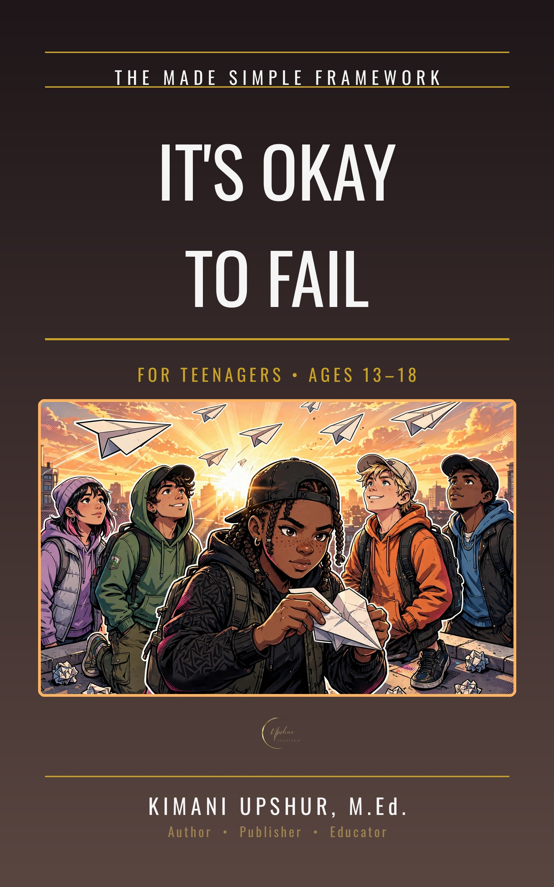

It's Okay to Fail: Failure, Grace, and Getting Back Up

Failure hurts, but it does not get the last word — and this book trains teenagers to prove it, one rise at a time. Built on the triad Fall, Rise, Repeat, it shows why falling is part of the righteous life, why there is no condemnation for those in Christ, and how grace meets readers in their weakest spots. Readers learn to confess honestly, leave the past behind, find purpose in suffering, wake to new mercies, try again with courage, and lift others who have fallen. It closes with the promise that God finishes the good work He starts. More from Kimani Upshur: https://upshurunlimitedllc.com
- Publisher
- Upshur Unlimited, LLC
- Author
- Kimani Upshur, M.Ed.
- Format
- Ebook
- Price
- $4.99
- Pages
- 67
- Published
- October 2026
- Language
- English
- Category
- Young Adult Nonfiction / Religious / Christian / General
- Ages
- 13–18
More Made Simple Books
Explore the full collection of Made Simple books.